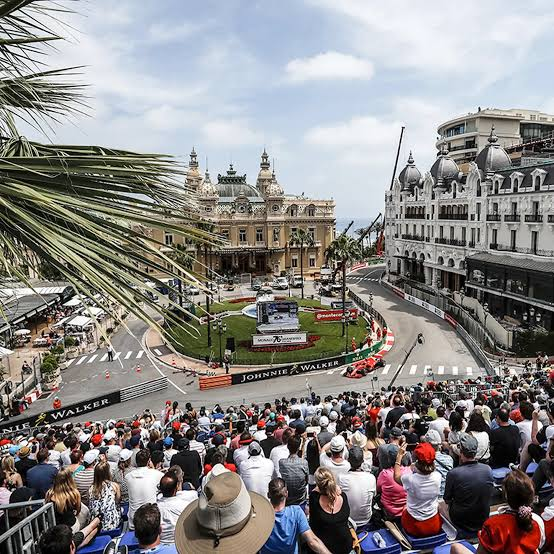

Turizmus | Pénzügyek & Ingatlanpiac | Szolgáltatások | Statisztika |
Monaco a világ egyik legexkluzívabb luxus úti célja, amely a csillogásról és a lenyűgöző tengerparti panorámáról ismert. Legfőbb vonzerejét az ikonikus Monte-Carlo Casino, a hercegi palota és a kikötőben horgonyzó gigantikus luxusjachtok jelentik. A hercegség leghíresebb eseménye az évente megrendezett, világhírű Formula–1 monacói nagydíj. A mindössze két négyzetkilométeres miniállam kiváló biztonságot, pálmafás sétányokat és prémium gasztronómiát kínál a látogatóknak. Monaco a történelmi örökség és a modern, high-end életstílus tökéletes, sűrített keveréke.Monaco turizmusa rendkívül dinamikus és jövedelmező ágazat: a legfrissebb adatok szerint a hercegség évente több mint 6,7 millió látogatást regisztrál, ami csaknem 1,4 milliárd euró közvetlen turisztikai költést generál az államnak.
Kiemelt Látnivalók és Modern Fejlesztések:
